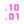
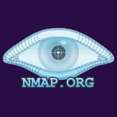

Anyone can image a drive. Proving what it means is the work.
Eight years in digital forensics and incident response.
Calm in the middle of the incident, rigorous in what comes after.
> I am a cybersecurity professional specialising in digital forensics and incident response, with over eight years handling high-impact security incidents, criminal investigations and forensic matters with real-world consequences. I served as a Security Operations Analyst with the FICSOC team supporting Ghana's banking sector, and I currently lead the forensic lab at Virtual InfoSec Africa, an MSSP serving clients across all 13 of Ghana's critical sectors.
> The casework includes more than 50 forensic and incident response reports, legal reports used in court and police proceedings, and testimony as an expert witness. Alongside the lab work, I build, train and mentor teams of analysts and responders, and design production platforms across threat intelligence, forensic automation, OSINT investigation, governance and compliance, and AI-assisted health and safety.
Scope of practice
Mobile forensics
Computer forensics
Memory forensics
Network forensics
Cloud forensics
Email forensics
RULE_01
Court-ready by default
Chain of custody, legal compliance and defensible methodology are not afterthoughts bolted on when a case turns serious. Every examination runs as if it will be challenged in court, because five of my reports already have been.
RULE_02
Build the missing tooling
When the tool I needed didn't exist for the West African threat landscape, I built it. Five production platforms shipped independently, across threat intelligence, DFIR automation, OSINT, GRC and AI-native safety.
RULE_03
Teach the next responder
Forensics only scales through people. I have trained over 100 professionals and students, mentored junior analysts into casework, and written the SOPs and playbooks my teams run on.
BuildsZONE 03
eli@ezb-os:~$ls -la /builds --shipped
Five production systems, designed and shipped solo.
Built outside of employer-assigned work. Each one a system I needed to exist, engineered end to end and running in production.
01HEIMDALL
National threat intelligence platform
Heimdall
Ghana-focused threat intelligence platform aggregating IOCs, CVEs, threat actor TTPs, sector exposure data and breach intelligence for national-level defenders. AI threat brief generator, semantic search over 8,500 indexed incidents, and a React-based analyst assistant with 8 specialised tools. Built for the West African threat landscape rather than a global feed calibrated for US and European environments.
Next.js
Python/FastAPI
PostgreSQL
Celery
Redis
Ollama
Claude API
02ALFACOTEX
Automated DFIR platform
Alfacotex
Consumer-facing DFIR platform with a Tauri-based agent for local forensic collection on Windows and macOS, a YARA detection engine loading 1,500+ rules, an AI examination engine that builds forensic narratives and attack timelines from scan data, a visual attack map, a privacy scanning module and scheduled scans. Evidence is structured into reports with an evidence meter and confidence layer designed to avoid false certainty.
Next.js
FastAPI
Rust (Tauri)
PostgreSQL
YARA
Claude API
Docker
03KUTARISA
OSINT investigation platform
Kutarisa
Link analysis and OSINT investigation platform built on React Flow with D3 force layout and ELK.js for graph arrangement, a recon API layer for entity enrichment, and a case management system structured around the investigation lifecycle, from recon to case to report.
Next.js
React Flow
D3
FastAPI
PostgreSQL
04VIA ASSURANCE
GRC platform
VIA Assurance
ISO 27001, ISO 9001 and NIST CSF 2.0 governance, risk and compliance platform built for VIA. Covers 17 compliance registers with a shared data view supporting table, card and board layouts, bulk operations, export, grouping and saved views. Audited write services with self-committing audit trails and role-based access control.
Next.js
FastAPI
PostgreSQL
Docker
05SAFETREXIQ
AI-native health & safety SaaS
SafetrexIQ formerly SafeIQos
Multi-tenant occupational health and safety platform for a UK-based client, live in production. ISO 45001-aligned incident management with AI-assisted systemic investigation, hierarchy of controls and CAPA workflows. An AI privacy gateway classifies and filters data before any model egress, preserving organisational data sovereignty.
Next.js
FastAPI
PostgreSQL
Ollama
Claude API
Docker
Case filesZONE 04
eli@ezb-os:~$gpg --decrypt /cases/classified.gpg
Evidence that has to survive a courtroom, not just a ticket queue.
Due to NDAs and the nature of the work, client and case details cannot be disclosed. What follows is the scope of the casework. Across it: chain of custody, legal compliance, court-ready evidence packages and forensic opinion for financial institutions, government agencies, educational institutions and mining companies.
CASE_01Sealed
Financial fraud & cybercrime
Business email compromise, online banking fraud, cryptocurrency theft
CASE_02Sealed
Insider threat
Investigations in banking and government environments
CASE_03Sealed
Ransomware
Attacks against corporate and institutional targets
CASE_04Sealed
Cyberbullying & harassment
Online abuse cases with evidentiary requirements
CASE_05Sealed
Romance fraud & extortion
Digital extortion and social-engineering casework
CASE_06Sealed
Data breach
Investigations with regulatory reporting requirements
CASE_07Sealed
DDoS & data destruction
Availability attacks and deliberate evidence destruction
CASE_08Sealed
Expert testimony
Courtroom interpretation of digital evidence and methodology
50+
Forensic & IR reports
05
Legal reports in court
01
Expert witness testimony
Quest logZONE 05
eli@ezb-os:~$cat /var/log/quest_log.dat
Quest log.
Every role since 2019, newest first. One active quest, six cleared.
Career map: 7 quests since 2019. Overlapping bars ran in parallel.
Feb 2025 to present
Active quest
1 yr 8 mo
QUEST 07 / 07
DFIR Lead
Virtual InfoSec Africa, Accra, Ghana
Lead the forensic lab within an MSSP serving clients across all 13 of Ghana's critical sectors: banking, finance, government, telecommunications, energy and healthcare
Coordinate with the FICSOC team providing security oversight for Ghana's 24 member banks, on cases where incidents require forensic follow-up
Direct forensic investigations and incident response on criminal and civil cases with legal evidentiary requirements
Lead OSINT investigations and threat intelligence operations; manage evidence handling and chain of custody
Train and mentor junior DFIR analysts; establish team SOPs, workflows and playbooks
Jan 2024 to Jan 2025
Cleared
1 yr 1 mo
QUEST 06 / 07
Digital Forensic Analyst, Level 1
Virtual InfoSec Africa, Accra, Ghana
Forensic analysis across mobile, memory, network and computer environments
OSINT, threat intelligence and incident response support
Aug 2022 to Dec 2023
Cleared
1 yr 5 mo
QUEST 05 / 07
Digital Forensics Examiner / Consultant
Self-Employed, Ghana
Independent DFIR consulting for banking, government, education and mining clients
Vulnerability assessments, system hardening and forensic data recovery
Jan 2023 to Dec 2023
Cleared
1 yr
QUEST 04 / 07
Volunteer Contributor
Atomic Red Team Community, Remote, US
Contributed bug reports and MITRE ATT&CK-aligned script improvements to the global open-source red teaming project
Jan 2023 to Mar 2023
Cleared
3 mo
QUEST 03 / 07
Cybersecurity Administrator
Virtually Testing Foundation, Remote, US
Vulnerability assessments, OSINT investigations and security training delivery
Mar 2022 to Aug 2023
Cleared
1 yr 6 mo
QUEST 02 / 07
Laboratory / XRF Technician, IT Support
Sahara Natural Resources, Ghana
Managed IT infrastructure and cybersecurity for laboratory operations
Sep 2019 to Sep 2020
Cleared
1 yr 1 mo
QUEST 01 / 07
Information Systems Engineer
Sefwi Wiawso Nursing Training School, Ghana
Installed and managed a 150+ workstation lab on Windows Server with network monitoring
Built a student database for 700+ students
TrophiesZONE 06
eli@ezb-os:~$./achievements --list --unlocked
Trophies unlocked.
Hover a star. Every number here is delivered work, not a projection.
13 critical sectors covered
24 member banks under FICSOC oversight
$240K+ potential loss prevented
100+ professionals & students trained
Trained by UNODC & Interpol
Atomic Red Team contributor
I2FIF framework designer
Published columnist, B&FT Ghana
13 critical sectors covered
24 member banks under FICSOC oversight
$240K+ potential loss prevented
100+ professionals & students trained
Trained by UNODC & Interpol
Atomic Red Team contributor
I2FIF framework designer
Published columnist, B&FT Ghana
13
Critical sectors
The lab I lead holds the broadest DFIR mandate of its kind in Ghana, alongside a SOC overseeing 24 member banks.
$240K+
Loss prevented
A hospitality-sector engagement where DFIR-led recovery and response stopped a six-figure loss.
100+
People trained
DFIR training delivered at KNUST, IDL and Palmers University, plus mentorship of junior analysts into live casework.
5
Platforms shipped solo
Production systems across DFIR, threat intelligence, OSINT, GRC and AI-assisted health & safety.
13critical sectors served by the lab
24member banks under FICSOC oversight
$240K+potential loss prevented in one engagement
8+years in DFIR and security operations
50+forensic and incident response reports
5legal reports used in court or police proceedings
1expert witness testimony
8case types, from BEC fraud to ransomware
100+professionals and students trained
3universities hosting his DFIR training
16professional certifications
150+workstation lab built on Windows Server
5production platforms shipped solo
8,500incidents indexed for semantic search (Heimdall)
1,500+YARA rules in the detection engine (Alfacotex)
17compliance registers (VIA Assurance)
8specialised tools in the analyst assistant (Heimdall)
UNODCand Interpol training in ransomware investigation
ARTAtomic Red Team open-source contributor
I2FIFIoT forensic investigation framework designed
3articles published in the B&FT (Ghana)
Trained by UNODC and Interpol in ransomware investigation and cross-border cybercrime. Designed the Integrated IoT Forensic Investigation Framework (I2FIF). Contributor to Atomic Red Team, an open-source project used by security teams globally.
InventoryZONE 07
eli@ezb-os:~$open /inventory --all-slots
The inventory, from disk imaging to LLM pipelines.
Every tool in the kit, sorted by slot.
62 items /8 slots
SLOT_01Digital forensics16
Belkasoft
Cellebrite
Magnet Axiom
Detego Forensic Suite
Autopsy
FTK
X-Ways
MD Next
Volatility 3
KAPE
Eric Zimmerman Tools

Elcomsoft
Passware
Scalpel
Foremost
DDrescue
SLOT_02Incident response & threat intel12
CyberTriage
Velociraptor
Arctic Security
InQuest
LogRhythm
Exabeam
AlienVault
EventTracker
Kaspersky EDR
CrowdStrike
Cortex XDR
SIEM investigation
SLOT_03Malware analysis4
IDA Pro

Ghidra
YARA rule authoring & engine integration
PsExec
SLOT_04OSINT5
Maltego
OSINT Framework
Passive DNS
BGP/ASN analysis
Breach intelligence feeds
SLOT_05AI engineering7
Claude API
Ollama local LLM deployment
RAG pipeline design
ReAct agent architecture
Prompt engineering
AI privacy gateway design
Semantic search with vector embeddings
SLOT_06Software development10
Python
FastAPI
Next.js / React
PostgreSQL
Docker
Redis
Celery
Rust (Tauri)
Bash
PowerShell
SLOT_07Penetration testing3
Metasploit
Burp Suite

Nmap
SLOT_08Infrastructure5
Linux
Windows Server
VPS deployment
Nginx
Cloud forensics on AWS & Azure
Field logsZONE 08
eli@ezb-os:~$tail -n3 /logs/published.log
Field logs, in print.
Published articles in the Business & Financial Times (Ghana).
LOG_01
“The Cryptocurrency Conundrum”
B&FT Ghana
LOG_02
“Unravelling Tomorrow's Cyber Saga: Anticipating Current and Future Threats”
B&FT Ghana
LOG_03
“Exploring the Tech Revolution”
B&FT Ghana
Education tree
MSc, Cybersecurity & Digital Forensics
Kwame Nkrumah University of Science and Technology (KNUST)
BSc (Hons), Computer Science
Kwame Nkrumah University of Science and Technology (KNUST)
Diploma, Theological & Ministerial Studies
Cave Adullam Bible Seminary
Badges earned 16 unlocked
ArcadeZONE 09
eli@ezb-os:~$ls /arcade --cabinets
Four cabinets. Every one of them is the job, played fast.
Each run earns XP for the player card up top. Best scores stay on this device.
EVIDENCE RUNNER
Evidence Runner
Sanko sprints through a data centre at night. Jump the malware, grab the evidence.
SPACE / TAP to jump
BEST 0
THREAT HUNT
Threat Hunt
Nine hosts, one round. Quarantine the threats and spare the legit processes.
1-9 / CLICK to quarantine
BEST 0
PHISH OR LEGIT
Phish or Legit
Eight messages. Swipe left on the phish, right on the real ones.
LEFT / RIGHT or SWIPE
BEST 0
CHAIN OF CUSTODY
Chain of Custody
Six phases, one defensible order. The court is watching.
1-6 / CLICK in order
BEST 0
ContactZONE 10
eli@ezb-os:~$./start_new_game --with-you
Have an incident, a case, or a hard problem? Insert coin.
Open to casework, consulting and hard problems
References and published work available on request. Expert witness methodology and casework can be discussed under NDA.
 Python/FastAPI
Python/FastAPI PostgreSQL
PostgreSQL Redis
Redis Claude API
Claude API